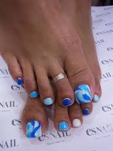
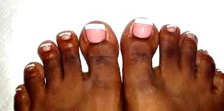
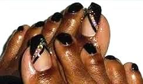
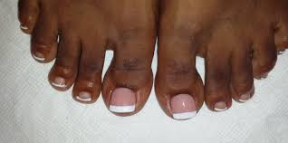

|
Pretty and Cute Toe Nail Designs




Toe-nail designs have been popular since the dawn of time.
Many people do it on their own or visit renowned shops to have their nail arts.
Either way, when summer comes everybody wants to look their best again and shows off their most complicated yet cute toe nail designs.
We have gathered the best tips and tricks for you, and inspirational toe nail designs so you are ready when you need to be.
Everyone knows that not all people are professionals when it comes to creating nail art.
Hence, many people are eager to learn about toenail design and nail art tips and tricks.
Doing your toe nails is part fashion and hygiene, hence, it must be treated with the same care and meticulousness as the hair and outfit.
Keeping the nails nice is an indication that you know how to take good care of yourself.
However, there are times when people want to spice up their nails a bit; you can do this through nail art. |